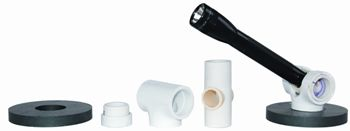

Some time ago, I went shopping for a flashlight to use for “under the hood” work on my Jeep. I decided to make my own swiveling magnetic flashlight holder and am pleased with the results. The magnet sticks to the hood and has 180 degrees of swivel, leaving no dark corners around the engine at all. I used it once when changing a tire in the dark on a country road. The magnet stuck to the side of the Jeep and I directed the light just where I needed it.
I used a 3-inch magnet from a junked auto speaker. It is 33⁄8 inches in diameter with a 11⁄4-inch center hole. This hole determines the dimensions of all the piping needed. I used scrap pieces of plastic plumbing pipe glued together with plumbing cement. It is designed to be used with the mini Mag Lite, which uses AA batteries and an LED bulb, and creates a focused beam and powerful light. The plastic tubing sizes I used were 1 inch, three-quarter inch, and the “T” piece was 11⁄4 inch in diameter.
|
 MATTHEW STALLBAUMER With scraps of plastic pipe and some ingenuity, you can make this handy swivel flashlight. |
|
|